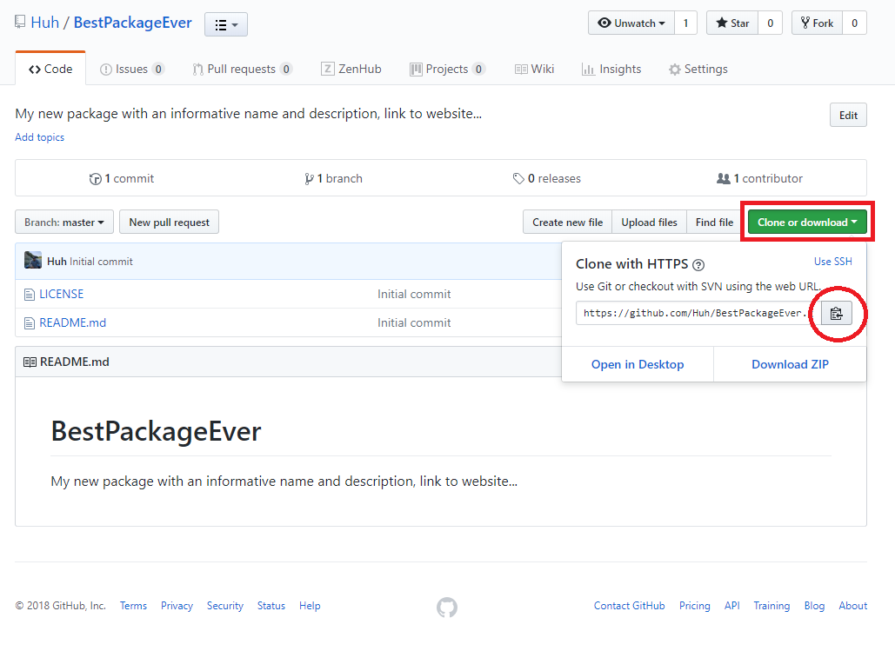

These notes are intended to provide a brief introduction to creating packages that are version controlled, documented and contain unit tests. We do not go into detail about why we want these things and many valuable features go unmentioned in the spirit of walk before you run. My preferred workflow is the second one where package creation begins with creating a repository on GitHub. If you wish to follow that workflow you should work through the prerequisites and then proceed to the second workflow.
The ideas in this document come from the writings and packages of the RStudio team. Most notable Hadley Wickham, Jenny Bryan and Jim Hester. These are good people to follow on GitHub and Twitter if you care to learn more about R and keep up to date on the Rstudio and tidyverse worlds.
We desire to write clean, reusable, version controlled code that will be useful to the author and others, now and in the future. Here we describe two methods. More thorough descriptions of the methods described herein are available at:
One difficulty with describing this process is that the workflow could start in several places. For example, we could start by creating a new repository on GitHub or we could begin by creating a package in RStudio. Either way is fine, but the trick is establishing a connection between your package, the RStudio project and git/GitHub. Before we get started there are few prerequisites.
We assume that you are using the RStudio IDE. If you choose to use another editor then some adjustments will be necessary.
You will need to install git in order for your package to be version controlled. You can download git from this link.
Rtools is a bit of software that when installed alongside R helps facilitate package building. I always install Rtools whenever I change versions of R. You should probably install it sooner than later, the link is here.
You must make sure that your RStudio IDE is connected to your GitHub account in order for this to work. How do you know if everything is ready to go? These tests are cute, but not fool proof and will not necessarily guarantee that functions in git2r or usethis will just work.
If at this point no errors appear and RStudio allows you to enter the repository URL and other information your setup is most likely ready to go. However, if the above steps worked you should also be able to:
Finally, if all of the above works open a Rproject or package and then verify you have the usethis package installed and try:
usethis::use_git()
usethis::use_github()If RStudio threw an error or otherwise indicated you were not connected to git and GitHub then you will need to make sure you have installed git and established a connection between RStudio and git and your GitHub account. If you need help try:
I really like the documentation for usethis and how it tells you when to refer to Happy Git. The exact steps to take are beyond the scope of this document. But I hope you record the steps you take in a Rmarkdown document so we can share those steps with others!
Sidebar, check out the use_usethis function and suggestions in the workflow above for loading particular packages whenever R starts.
Packages are the primary means of organizing code in R or as Hadley Wickham wrote in R packages “the fundamental unit of shareable code is the package”. They are easily shared, consistent in structure and suggest the use of best practices when coding (e.g. documentation and testing). In this introduction to coding and package writing we will rely on the following packages:
If you want to install all of these packages you can try:
install.packages(
c("devtolls", "usethis", "roxygen2", "testthat", "covr"),
dependencies = T,
repos = "https://cloud.r-project.org/"
)Disclaimer - if you have an old version of one of these packages some or all of the functionality below may not work
Let’s begin by creating a package called “mypkg”. Thanks to usethis we can accomplish this in a single step. Run the following line in your R console, but don’t forget to change the filepath to the location where you want to create this new package. I store every package, which is also a repository, in a directory called GitHub. Also note that the last part of the filename is the name of the package.
usethis::create_package("C:/Users/user.name/Documents/GitHub/mypkg")By calling this function we have created a series of folders and files common to all packages. We see:
Version control (via git or other means) and websites like GitHub help us share code, ease collaboration and provide a means of allowing us to revert back to some previous state if necessary. The suggested workflow within GitHub is detailed here, but other versions exist, like ZenHub.
A corny, but useful introduction to the GitHub workflow:
A deep dive into the GitHub Workflow:
Right, the purpose of this section was how do we add version control, well it turns out to be pretty straightforward, try typing the following in your R console:
use_git()
use_github()If and when these fail refer back to the links in the beginning that explain how to setup usethis and Happy Git. A the time of this writing usethis was not able to find my credentials, but they were there. GitHub issue #353 addresses this in part by suggesting that a call to git2r::cred_ssh_key() may help on a Windows machine. The modified call for me was
use_github(credentials = git2r::cred_ssh_key())License describe how your code can be used by others. An example of using the MIT license is shown below.
use_mit_license("your name")A readme file helps people learn about and use your package. Try this list for some great readme examples. GitHub has some suggestions for writing readme files too.
use_readme_rmd()Above I chose to use the rmd style, but a simpler .md style is also available. Try both and see which you like best. The .rmd version is aimed at including your R code as well as markdown and when you call this functiona template will appear in your editor.
If using git and GitHub your package should include a .gitignore file. This file tells git to ignore certain types of files, such as data or passwords.
use_git_ignore("files2ignore")pkgdown is an R package that makes it quick and easy to build a pretty website for your package. Check it out at: http://pkgdown.r-lib.org/.
use_pkgdown()This section was included to remind the reader that there are many other functions in usethis that will help add features and enhance your package.
In this workflow we will start by creating a repository on GitHub and then proceed to copy it to our local machine. This is my preferred way of doing things because I don’t care about using the usethis::use_git(), usethis::use_github() and other helper functions to make sure I get the repository all setup the way I want. Anyway, to begin…
Set yourself up to clone the repository to your personal computer (because GitHub is on the internet). Click on the green button Clone or download and then copy the url to your clipboard. 
Now open RStudio and proceed to the next section
With the repository created we want to create an R package using the notion of a R project to help with working directories and the like.
Unlike the calls in the first workflow we do not need to call use_git, use_github, use_git_ignore or other git related calls because we created the repo online and defined all of those parameters during creation. In addition, usethis::use_pkgdown() and other whizbang steps are still options in this workflow.
Both workflows were trying to get us to a place where we have a Rproject file and a R package that are version controlled and then the steps below will add code, testing and documentation.
Now that the package is created we want to add code to it. The basic workflow is as follows:
usethis::use_r("foo") to create a function in the packagedevtools::load_all()It is important that we don’t source our code directly to the console (i.e. global environment). If we did source our code then our changes would not take effect and we would create a conflict between the package functions and the code loaded in the workspace. Use Ctl + Shift + L, your functions will be available, but will not appear in the Environment pane as objects, which is the desired effect.
With a single function written we should now document that function.
My code looks like
#' A function to add 2
#'
#' @param x A numeric input of any length
#'
#' @return numeric equal in length to input x
#' @export
#'
#' @examples
#' foo(4)
foo <- function(x){
out <- x + 2
return(out)
}Our package code is now working and documented, but we haven’t really tested it yet.
usethis::use_test() in the consoletest_that("multiplication works", {
expect_equal(foo(2), 4)
})
test_that("failures matter", {
expect_error(foo("A"))
})While your tests are running you may notice a new window in the RStudio IDE. This is showing you the results of your test.
Now we have a package with a function that is documented and tested.
Because I am a bit OCD, I typically push all the buttons and build packages as follows:
Congratulations, you have built your first package with version control, documentation and unit tests. That is great step toward better coding!